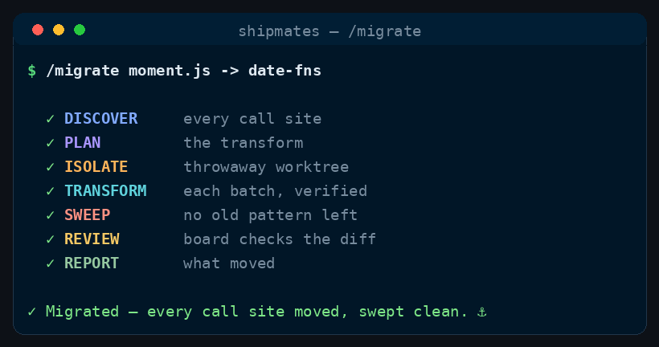

Command
/migrate
discover → transform each → verify → sweep clean
Run a mechanical migration across a whole codebase — discover every call site, transform each in isolation, verify per-site, and gate on a clean sweep (no old-pattern remnants) with the suite green. For API/dependency/pattern/framework migrations.
See it run

/migrate runs, in order.How to run it
Run it in your harness
/migrate <from → to — e.g. "moment.js → date-fns" or "callback API → async/await"><angle brackets> = required · [square brackets] = optional
Step by step
The stages
Seven stages, in order. Two are hard gates — the run stops there until they pass.
Cost discipline
- Stable workflow instructions come before runtime input. Read and parse the complete runtime-input section at the end before acting; do not weave volatile issue text, arguments, diffs, or generated output through this prefix.
- Complexity-Based Tiered Execution: Before starting the workflow, evaluate the task complexity based on the input and repository context to select one of three execution paths:
- Simple: Minor/straightforward changes (e.g. documentation, typos, single config line, small edits affecting <= 2 files and <= 15 lines of code, no specialist flags). The main agent (you) executes, validates, and delivers the PR directly — but must still convene the mandatory PE+PO acceptance board on the pushed head (see shared board below). Cost savings come from skipping Planner/Builder spawns and optional specialists, not from skipping review.
- Medium: Moderate changes (<= 5 files, no major module boundaries, no architectural/security/delivery flags). Spawn a Planner and a single Builder and single SDET; skip Stage 1.5 design specs when no flags apply. Must convene PE+PO (and SDET on the board when validation is non-trivial) — not main-agent review.
- High: Complex or high-risk changes (e.g. major refactors, architectural boundaries, security/delivery changes). Follow the full multi-agent process loop described in the command, including Stage 1.5 when flagged and scaled optional board seats.
- Spend subagent seats only where their decision can change the outcome. Route model and effort at spawn by work difficulty; never hardcode a model in canonical content.
- Ask every subagent for a compact structured return: decision/status first, criterion findings and minimal evidence, then blockers, changed files with one-line rationale, and next action as relevant. Return decisions, not transcripts or raw logs.
Carry a repeated, mechanical change across an entire codebase without missing a site or leaving it half-migrated. Discover every occurrence, transform each independently in isolation, verify per site, and close only when a grep for the old pattern comes back empty and the suite is green. The gate is "zero remnants + still green," and nothing is dropped silently.
The migration comes from the Runtime input section at the end of this workflow.
-
Stage 0 — Discover every call site
Gate: the migration is only as good as this census
Exhaustively find all occurrences of the old pattern —
grep/globacross the repo for the symbol, import, signature, or idiom (account for aliases, re-exports, string references, config, and docs). Produce a complete inventory with counts and a per-file list. This census is the definition of "done": every item on it must end migrated or explicitly excluded. Note any ambiguous/hand-judgement sites separately. -
Stage 1 — Plan the transform
Define the exact old→new transformation and the per-site verification (the tests/build that prove a site still works). Identify sites that are not mechanical (semantics differ, not just syntax) and flag them for careful individual handling rather than a blind sweep. Batch the inventory by module/ownership.
-
Stage 2 — Isolate
git -C <repo> fetch origin git -C <repo> worktree add <WORKTREE_DIR> -b <BRANCH> origin/<BASE_BRANCH>All transforms land in the worktree; the base branch stays clean.
-
Stage 3 — Transform each batch
Crew:
senior-engineer(× N, parallel, non-overlapping files)Spawn one
TRANSFORMERper batch in a single message (concurrent), each owning a disjoint file set (useisolation: worktreeif they'd otherwise collide). Each applies the exact transform to its sites, preserves behaviour, matches surrounding style, and reports the sites it changed. Handle the flagged non-mechanical sites individually — never blind-replace where semantics differ. -
Stage 4 — Verify + sweep clean
Gate: HARD GATE
Crew:
sdetsdetruns the full suite/build on the worktree — everything green.- Sweep: re-grep for the old pattern across the whole repo. It must come back empty (bar the sites you explicitly excluded in Stage 0, which you list). Any straggler → back to Stage 3.
- Push and run the CI gate (poll
gh pr checks; red → pull log, fix, re-push, re-poll — bounded byMAX_FIX_ROUNDS). Never advance red.
If any sites are intentionally left un-migrated, log them loudly in the report and PR — a silent partial migration reads as "done" when it isn't.
-
Stage 5 — Review & deliver
Crew:
product-managerprincipal-engineersdetarchitectdevops-engineertechnical-writerux-ui-designerart-directorsecurity-engineerperformance-engineersite-reliability-engineerdata-scientistsenior-engineer(agents, on the pushed PR head)Spawn reviewers in parallel against the PR head commit — they review exactly what will merge.
Mandatory seats (never skip)
product-manager(PO): checks every acceptance criterion AND the quality bar (README / CLAUDE.md / contributing). ReturnsACCEPT/ACCEPT-WITH-NITS/REJECTwith specifics per criterion.principal-engineer(PE): principal-level diff review — correctness, edge cases, naming, test meaningfulness, scope discipline, security hygiene at review depth (not a/hardenpass). Verifies the PR satisfied the repo's mandatory ship checklist for this change class (regenerated generated pages, updated fixture digests, version/changelog when required, site validation, no hand-edited generated paths). ReturnsACCEPT/ACCEPT-WITH-NITS/REJECTwithfile:lineevidence.
Tiered execution may lean the build path on Simple/Medium, but must not skip PE+PO once a PR head exists.
Scaled optional seats
Convene only when the change can plausibly trip the concern. A gated-out seat is named in the report with its flag or reason — never silently skipped.
Seat Join when sdetMedium+ code changes, or any change where validation is non-trivial. On Simple doc-only runs with a trivial validation plan, PE+PO may suffice — state which validation ran. architectIS_ARCH_SIGNIFICANTdevops-engineerIS_DELIVERY_SENSITIVEtechnical-writerIS_DOCS_AFFECTING— doc copy/staleness (PE covers process compliance; both may run)ux-ui-designerIS_UI_STORYart-directorIS_VISUAL_STORYsecurity-engineer/pr-reviewonly whenIS_SECURITY_SENSITIVEperformance-engineer/pr-reviewwhen the PR claims a perf win or touches a hot path;/refactorwhen the stated motivation was performancesite-reliability-engineer/pr-reviewwhen runtime behaviour, failure handling, or rollout changesdata-scientist/pr-reviewwhen the deliverable is an analysis or modelThe
IS_*flag vocabulary is shared by/ship-issueStage 0 and/pr-reviewStage 0 — a new flag must be added to both classifiers.Decision
- All spawned reviewers ACCEPT/PASS (nits allowed) → proceed to deliver / the command's next stage.
- Any REJECT / FAIL → remediation loop (where the command defines one), then re-convene the board on the new head.
Harness fallback
If
principal-engineeror any role does not resolve to an.claude/agents/*.mdfile (skill-only harnesses until crew agents ship), fall back togeneral-purposewith the role brief inlined and note the fallback — never silently skip a mandatory seat.Command-specific seats (in addition to the mandatory PE+PO core):
sdet(always): suite green on the PR head; sweep confirmed clean.senior-engineerorarchitect(fresh): spot-checks a sample of transformed sites for correctness and the non-mechanical sites in full — confirms behaviour is preserved, not just that it compiles.
Any
REJECT/FAIL→ fixer loop, re-push, re-gate (bounded), then escalate. Open (or,auto, merge) the PR: body lists the census counts, sites migrated, sites excluded (with reasons), and the green-CI link. -
Stage 6 — Report
The inventory (found / migrated / excluded), the clean-sweep confirmation, review verdicts, fix rounds, and the PR link. Be explicit about anything deliberately left behind.
Runtime input
$ARGUMENTS describes the from → to migration: an API/signature change, dependency swap, language/framework idiom, config format, or renamed symbol. If empty, ask what is migrating to what.
Config
BASE_BRANCH= default branch.WORKTREE_DIR=../<repo>--migrate-<slug>.BRANCH=chore/migrate-<slug>.TRANSFORMER=senior-engineer.MAX_FIX_ROUNDS=3.MERGE_MODE=manual(autoopt-in).BATCH= group call sites by module/ownership so parallel transformers don't touch the same files.- Correctness bar / test commands = the repo's own. Read them first. Orchestrator owns all git/gh.
Guardrails
- The census in Stage 0 is the contract — every discovered site ends migrated or explicitly excluded; the clean re-grep is the proof.
- No silent truncation. Excluded/skipped sites are listed loudly, never quietly dropped.
- Mechanical ≠ semantic: sites where meaning (not just syntax) changes get individual human-grade handling.
- Isolated worktrees + non-overlapping ownership so parallel transforms don't corrupt each other.
- Bounded loops; never advance a red PR; the reviewer is a fresh agent.
- If a role doesn't resolve to an
.claude/agents/*.md, fall back togeneral-purposewith the brief inlined and note it.
Where this lives
This page is generated from commands/migrate.md. The installer copies it to ~/.claude/skills/migrate/SKILL.md for every project, or .claude/skills/migrate/SKILL.md inside a single repo.